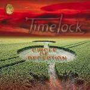

| Artist: | Timelock |
| Title: | Circle Of Deception |
| Label: | Xymphonia Records XYM 004 |
| Length(s): | 61 minutes |
| Year(s) of release: | 2002 |
| Month of review: | [03/2003] |
| 1) | The Road To Bablyon | 6.04 |
| 2) | Man In The Mirror | 6.00 |
| 3) | Louise Brooks Revisited | 6.27 |
| 4) | Redskindian | 4.44 |
| 5) | Different Light | 4.20 |
| 6) | Oceans Away | 5.29 |
| 7) | Voodoo | 4.31 |
| 8) | The Fortune | 6.27 |
| 9) | Everything Except The World | 12.18 |
| 10) | The Way I Am | 5.14 |
Man In The Mirror is a quieter track with the somewhat nasal vocals of Driessen, and plenty of melodic piano. The transition to the bombastic part is in fact a great one. This is really very good. I wonder how they are going to top this one. Powerful chords, sweeping gestures, a grand finale.
Louise Brooks Revisited is a percussive piece with some rather up-beat parts. The organ again plays a rather large role. The recording sounds very good, especially the drums sound clear and crisp. Plenty of keyboard soloing towards the end, the handclapping is something I could do without. We close down with the catchy chorus.
Seems at first that Redskindian is a live track with all these people chanting, but of course it's the subject matter doing that. Then we get a well-oiled speed up with soloing synths and organs. Plenty of energy here. Many of you may consider this to be simple melodic rock, a bit flashier than most, but not prog. On the other these melodic tracks do pack a large amount of variation, both melodic and otherwise. The songs ends with military drums and good imagery on the guitar. Another good track.
Different Light opens as a ballad, but turns out to be rather up-beat funky track with some nice keyboard runs as main prog elements. The guitar is mainly used for rhythmic purposes here. The vocal lines are a bit too accessible.
We rock away on Oceans Away, the guitar taking the fore. After a good opening, the vocal part is again a bit too frolic for my tastes, too straightforward, too catchy. The chorus is a bit better, and the melodic guitar work is nice, it is quite a bit more subdued than the vocal passages.
Voodoo opens with typical neo-keyboards, then the rhythm guitar and the vocals take over again. These vocals sound a bit further away than on previous tracks. The drum parts are rather straightforward on this one, plain hacking away. Notwithstanding a good bridge, this is a rather simple rock track. The ending is a climactic one though.
The Fortune adds little to the foregoing. The epic on the album is Everything Except The World. As you might expect, this is one which builds slowly. It all starts of with etheric guitar, fast runs on the keyboards, following by some more atmospheric keyboards and piano. A good beginning. The vocal part drowns a bit in the heavy chords played here, but the combination sounds good. Then the guitar moves back a bit, the piano comes the fore, the vocals stay. These two types alternate, giving way to a catchy chorus part. A good melody, reminding me a bit of For Absent Friends (not so surprising in retrospect, because it is the current FAF vocalist singing), but the drumming is a bit plain. Then we move into a vaguer area, where the drumming becomes more accidental in nature, a more atmospheric intermezzo. The music continues in a more jazzy vocal vein, but the catchiness soon returns to music. I guess with the length of the track, the extra vocal variation is a good idea. Notwithstanding some very likable parts, the tension of the song is not maintained throughout. Around the nine minute mark the song changes face again, this time to get tension back into the song. This passage with the driving rhythm guitar is reminiscent of Saga. The keyboard solo's aren't though. A climactic end follows with keyboards and guitar alternatingly soloing.
The Way I Am is the closing ballad/love song: soft, slow and very sweet, of the hold-up-your-lighter-type. In that line of music this is not a bad one, especially when the growling guitar sets in, softly mind you.